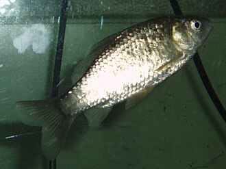

ふな（鮒）の漁獲量 都道府県ランキング
全13県の順位と、とれた量
ふなが日本でいちばん多くとれるのは岡山県です。117 tで、全国（248 t）の47%を占めます。

| 順位 | 都道府県 | 漁獲量 | 全国に占める割合 |
|---|---|---|---|
| 1位 | 岡山県 | 117 t | 47% |
| 2位 | 新潟県 | 47 t | 19% |
| 3位 | 滋賀県 | 44 t | 18% |
| 4位 | 茨城県 | 9 t | 3.6% |
| 5位 | 青森県 | 5 t | 2.0% |
| 6位 | 千葉県 | 5 t | 2.0% |
| 7位 | 島根県 | 5 t | 2.0% |
| 8位 | 福岡県 | 5 t | 2.0% |
| 9位 | 東京都 | 2 t | 0.8% |
| 10位 | 神奈川県 | 2 t | 0.8% |
| 11位 | 岐阜県 | 2 t | 0.8% |
| 12位 | 群馬県 | 1 t | 0.4% |
| 13位 | 愛媛県 | 1 t | 0.4% |
ふなの漁獲量の推移（令和3年〜令和6年）
全国の漁獲量は、令和3年の377 tから令和6年の248 tへ、34%減りました。この間、1位はずっと岡山県です。
| 年 | 全国 | 1位 | 2位 | 3位 |
|---|---|---|---|---|
| 令和6年 | 248 t | 岡山県117 t | 新潟県47 t | 滋賀県44 t |
| 令和5年 | 294 t | 岡山県126 t | 新潟県50 t | 茨城県11 t |
| 令和4年 | 339 t | 岡山県147 t | 滋賀県65 t | 新潟県56 t |
| 令和3年 | 377 t | 岡山県167 t | 滋賀県77 t | 新潟県60 t |
この数字について
- 分類：鯉の仲間
- 全国の漁獲量：248 t
- この数字が表すもの：漁獲量（川や湖でとった重さ）
- 調査：内水面漁業生産統計調査（内水面漁業） 令和6年
- この品目は川や湖の統計です。
- 13県分を調査（調査していない県は順位に入りません）
ふなの漁獲量について、よくある質問
- ふなの漁獲量が日本一の都道府県はどこですか？
- 岡山県です。内水面漁業生産統計調査（内水面漁業）（令和6年）で117 tでした。
- ふなの漁獲量ランキング2位・3位はどこですか？
- 2位は新潟県（47 t）、3位は滋賀県（44 t）です。
- ふなの漁獲量ランキング4位・5位はどこですか？
- 4位は茨城県（9 t）、5位は青森県（5 t）です。ふなの全13県の順位は上の表のとおりです。
- ふなの全国の漁獲量はどれくらいですか？
- 248 t（令和6年）です。